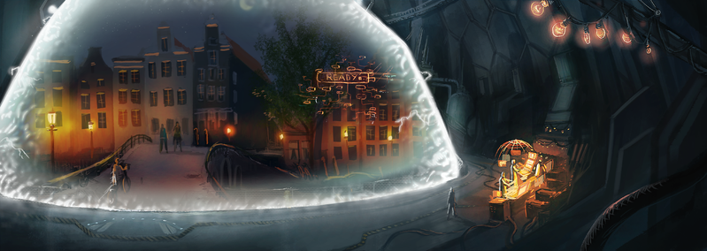

Time Traveling Historians
I love reading books where historians go back in time to study history. Nothing, of course, goes as planned leading to both heartbreaking and hilarious moments. My favorite authors are Connie Willis and Jodi Taylor.
